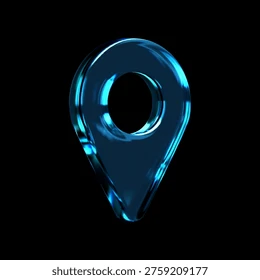

Yamaha NMAX 155
MOTORPlat: B 1234 XYZ · IMEI: 8642-9912-0003

LOKASI TERAKHIR
Jl. Jenderal Sudirman No. 45, RT 02/05, Jakarta Pusat
Pembaruan 2 detik lalu via 4G LTE
KECEPATAN
42 km/j
STATUS MESIN
KONTAK ON
BATERAI & AKI
98% · 13.8 Volt
SINYAL GPS & 4G
−68 dBm (Sangat Baik)
Ringkasan Hari Ini (Jumat, 9 Okt)
TOTAL JARAK
38.4 km
DURASI
1j 18m
TOP SPEED
78 km/j
Perjalanan 1 · 14.15 - 15.02
Nine Garage Arcadia → Sudirman (22 km)
47 menit
Perjalanan 2 · 09.20 - 09.51
Rumah → Nine Garage Arcadia (16.4 km)
31 menit
ZONA AMAN (GEOFENCE)
Notifikasi otomatis saat kendaraan keluar/masuk zona.
Zona Rumah (Radius 200m)
Arcadia Residence · Notif Keluar & Masuk
Zona Kantor (Radius 300m)
Sudirman Tower · Notif Keluar
ODOMETER VIRTUAL
12.480 km
Oli Mesin Matic 10W-40
1.800 / 2.000 km (90%)
Tersisa 200 km lagi
Filter Udara
4.200 / 10.000 km (42%)
Kondisi sangat baik
Peringatan Mesin Nyala
Notif saat kontak motor ON tanpa izin
Peringatan Getaran & Derek
Sensor g-force aktif saat posisi parkir
Alarm Batas Kecepatan
Batas maksimal: 80 km/j